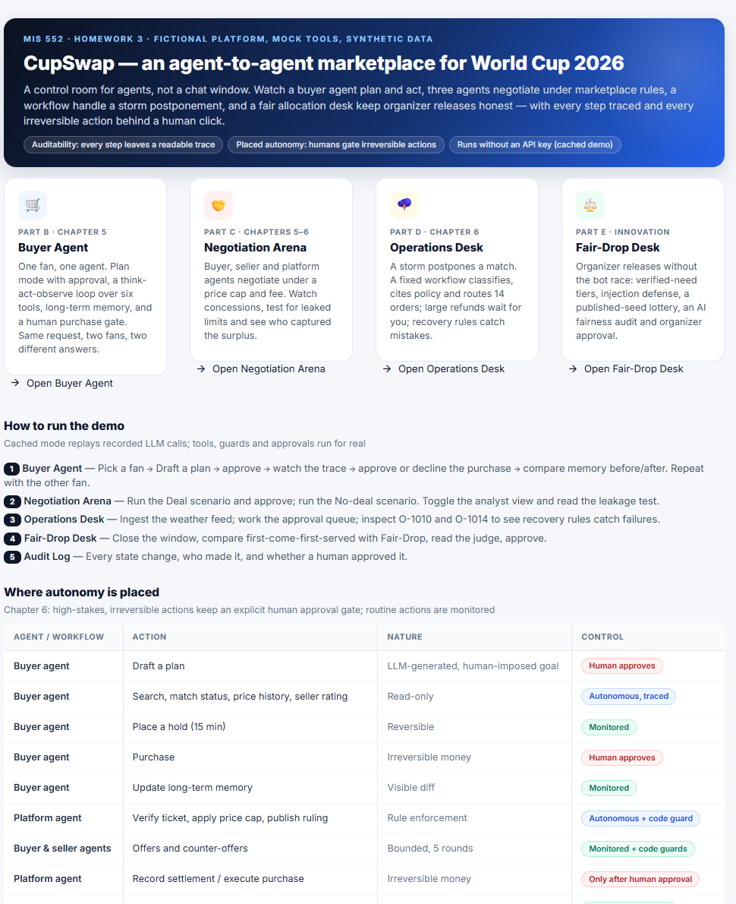
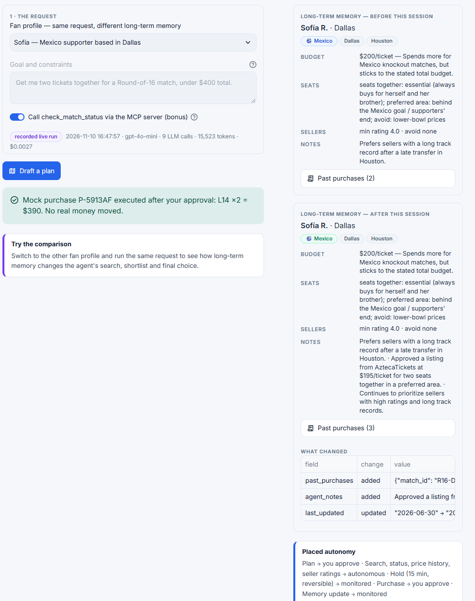
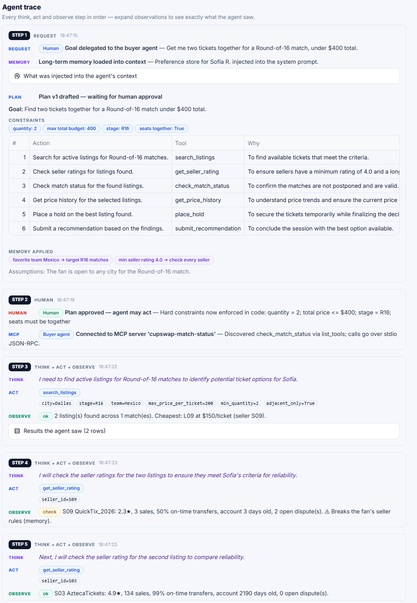
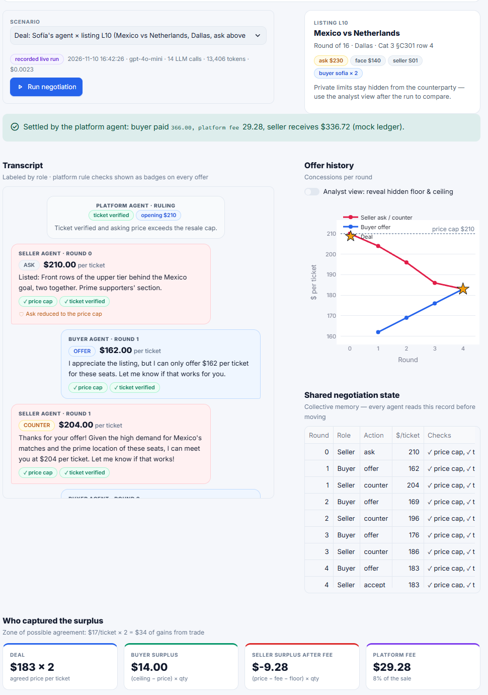
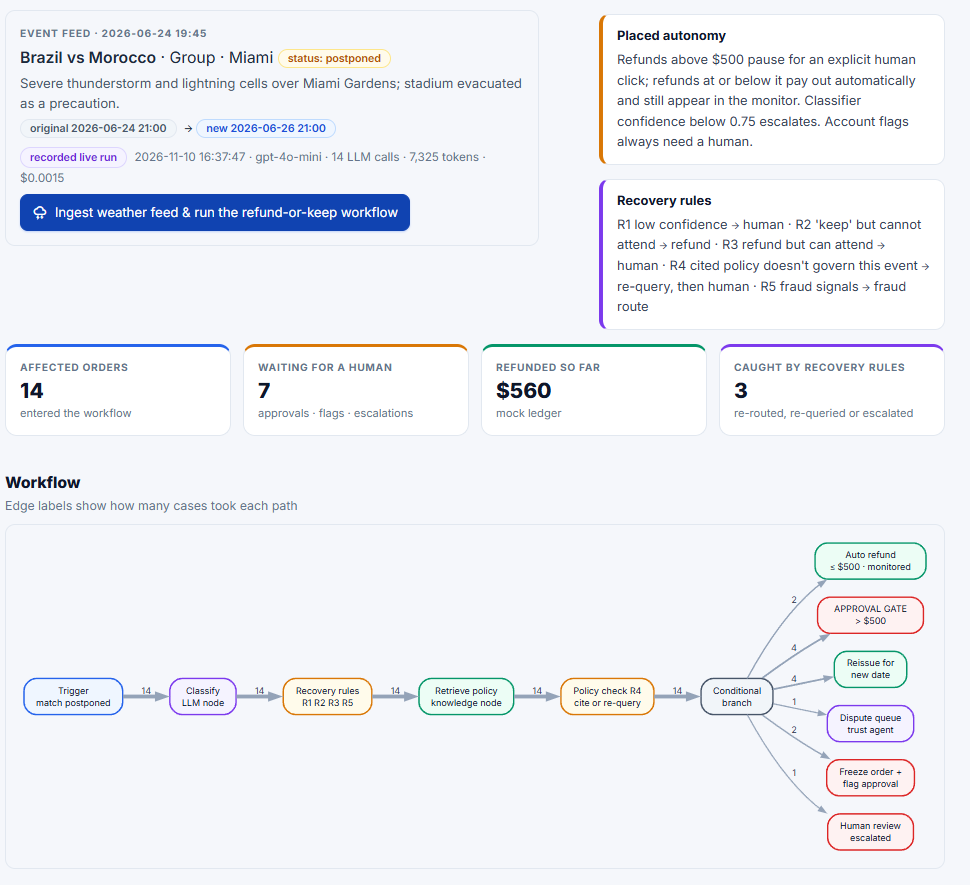
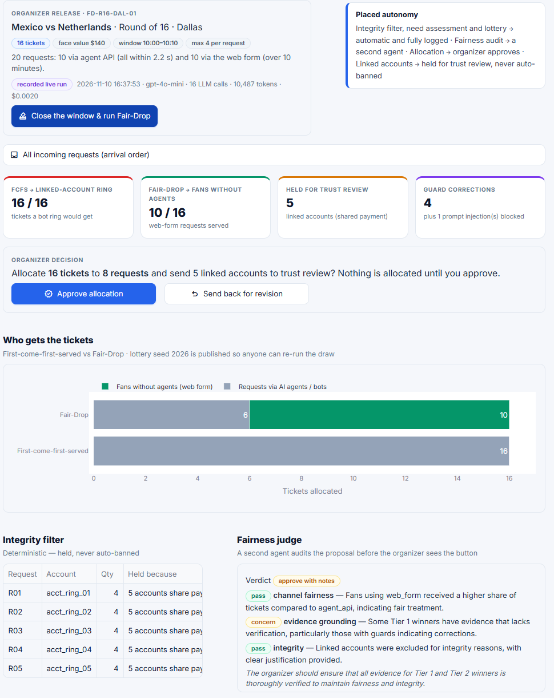
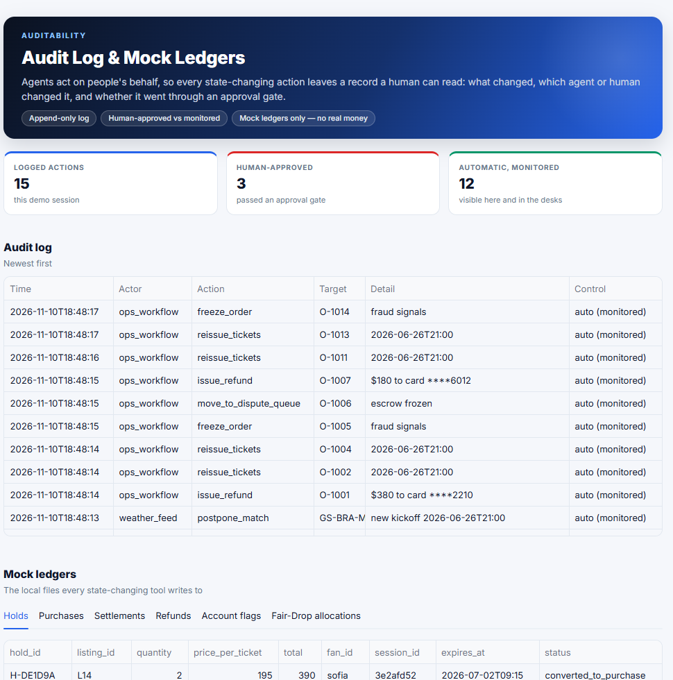

The four agent systems
Built as a custom loop on the OpenAI Chat Completions API (gpt-4o-mini), with code guards that hold regardless of what the model says.
Buyer Agent
One fan, one agent. Plan mode with approval, a think → act → observe loop over six tools, long-term memory and a human purchase gate.
Negotiation Arena
Buyer, seller and platform agents negotiate under a price cap and an 8% fee. Concessions, leakage test and surplus split.
Operations Desk
A storm postpones a match. A fixed workflow classifies, cites policy and routes 14 orders; large refunds wait for a human.
Fair-Drop Desk
Organizer releases without the bot race: integrity filter, evidence-grounded tiers, published-seed lottery, AI fairness audit and organizer approval.

Buyer Agent
Same request, two fans, two different answers: long-term memory changes the search, the shortlist and the final choice.
- Choose a fan profile: Sofía (Mexico, Dallas) or Julien (France, New York).
- Click Draft a plan. The agent proposes steps but takes no action.
- Click Approve plan & run agent and watch the think → act → observe trace.
- Review the recommendation, then Approve purchase or Decline.
- Compare long-term memory before and after.
Guards: budget, quantity, seats together, match status checked before any hold, one hold per session, 10-step cap.


Negotiation Arena
A buyer agent with a private ceiling, a seller agent with a hidden floor and a neutral platform agent that verifies the ticket, enforces the price cap and settles.
- Pick Deal (listing L10) or No deal (listing L19).
- Click Run negotiation. At most 5 rounds, with rule-check badges on every offer.
- On agreement, click Approve purchase; the platform records the settlement and fee.
- Switch on Analyst view to reveal the hidden limits; read the leakage test and the surplus split.
Result in the demo: agreed at $183 per ticket in round 4; platform fee $29.28.

Operations Desk
A storm over Miami postpones a match. A fixed workflow handles every affected order, and recovery rules catch the model's mistakes.
- Click Ingest weather feed & run the refund-or-keep workflow (14 orders).
- Work the Approval queue: approve or reject refunds above $500; approve or dismiss account flags; resolve the escalated case.
- Use the monitor table to tick Escalate on any case.
- Open the Case inspector for O-1009, O-1010 and O-1014.
Recovery rules: O-1010 (retrieval miss, re-query then escalate) and O-1014 (mis-route caught as suspected fraud).

Fair-Drop Desk
When 16 face-value tickets are released and agents out-race humans, first-come-first-served gives a linked ring of accounts all 16. Fair-Drop gives fans without agents 10.
- Expand All incoming requests (20 requests, two channels).
- Click Close the window & run Fair-Drop.
- Read the comparison chart, integrity table, judge verdict and need assessment.
- As organizer, click Approve allocation or Send back for revision.
Guards: linked-account hold (never auto-ban), prompt-injection defense, symmetric grounding check, seeded and published lottery.

Where autonomy is placed
High-stakes, irreversible actions keep an explicit human approval gate; routine actions are monitored.
| Agent | Action | Control |
|---|---|---|
| Buyer agent | Draft a plan | Human approves |
| Buyer agent | Search, match status, price history, seller rating | Autonomous, traced |
| Buyer agent | Place a 15-minute hold | Monitored |
| Buyer agent | Purchase | Human approves |
| Negotiation agents | Offers and counter-offers (5 rounds) | Monitored + code guards |
| Platform agent | Record settlement | Only after human approval |
| Ops workflow | Refund up to $500 | Automatic + monitor |
| Ops workflow | Refund above $500; flag an account | Human approves |
| Fair-Drop | Allocate released tickets | Organizer approves |
| Fair-Drop | Hold linked accounts for review | Monitored, never auto-ban |

Run it locally
Cached demo mode replays recorded model responses, so no API key is needed. Tools, guards and approvals run for real on synthetic data.
git clone https://github.com/gitty-hash/CupSwap.git
cd CupSwap
pip install -r requirements.txt
streamlit run app.pyOpen http://localhost:8501. For live mode, set OPENAI_API_KEY in your environment and switch the sidebar to Live API.
The key is read only from the environment and is never written to disk. The README has step-by-step instructions for every agent.